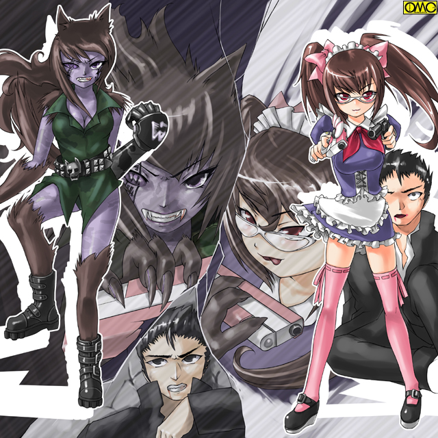

気の遠くなるほどの太古。
様々な村や街を襲撃して回る女だけの蛮族。アマッドネスがいた。
戦闘民族の彼女たちは魔力により動植物の能力を取り込み異形と化していった。
これにはどんな軍隊も歯が立たなかった。
それは神聖都市・ミュスアシも同様だったのだがここで効力を発揮したのが神秘の力を聖なる力として戦う「戦乙女」と呼ばれた三人の少女の存在だった。
なまじ魔力で守られていた異形たちは「聖なる力」の前に次々と倒されていく。
だが百体以上の魔物を三人で倒さないといけない。容易ではなかった。
「ああっ。もう。次から次へと切りがない」
現代で言うならボーイッシュな印象の短めの髪をした少女。
右腕に不死鳥を象った真紅のガントレット。
左腕にイルカを象った蒼いガントレットをした彼女・セーラは拳で敵を叩きのめしていた。
数多の敵に苛立ちを隠せない。
真紅のガントレットを叩いて軽く地面を蹴る。
背中にオーラが象る翅が出現して彼女を浮遊させる。
頭上を取られた異形たちは次々と倒されていく。
「助けて」
一人の少女がタコの異形によって川に引きずり込まれかけている。
「この」
浮遊するセーラは左の青いアクアガントレットを叩いた。
翅が消える。そのままセーラは川へと飛び込む。
引きずり込もうとするオクトパスアマッドネスを妨害して少女を助けるセーラ。
水中での戦いは三分以上に及んだが、両者共に陸の上であるかのように振舞っていた。
「さぁ。次に刀のさびになりたいのは誰だ？」
スレンダーな長身の少女。ブレイザが刀を構えて言う。
すごんではいないが自然と凄みが出る。それだけの数を切り倒してきた。
その目力に臆したか飛び込もうという魔物がいない。
「噂に聞く女剣士。ブレイザとはキサマか」
両手に鎌を持つ…否。蟷螂そのものの異形がずいとでる。
「一度手あわせてしたいと思っていた」
「よかろう。地獄への土産でとくと味わうがよい」
言葉と裏腹にブレイザは刀を鞘に収める。
マンティスアマッドネスは困惑した。
これでは間合いがつかめない…と。
焦れて先に動いたのはどちらでもないつばめの異形。
そしてそれに乗じてマンティスも動いた。ちょうどスワローアマッドネスを盾にする形。
「むんっ」
なんとブレイザは両者もろとも叩ききった。
「ぐぎゃあああああっ」
血しぶきを上げて倒れる蟷螂とつばめの異形。
つばを飲む化物たち。
表情一つ変えずにブレイザは言う「次は誰だ？ これも情だ。苦しまぬように葬ってやる」
そしてここ。弓を手にした少女と半獣の女とにらみ合っていた。
異形は両手両足が獣毛に覆われていた。尻尾まである。
耳の形状から見て狼の能力を取り込んだと思われる。
「ふふふ」
その女…ミオは弓の少女を中心にして高速移動を開始した。円の動きだ。狙いを定めにくい。
「それならこちらはこうするだけですよ」
彼女…ジャンスは手にしていた弓を変化させた。
馬上弓のように小振りになる。矢も短めに。
精度は落ちるが連射が可能に。
「はっ」
気合と共に放たれた幾つもの矢が狼の能力を持つアマッドネスに炸裂した。
「ぐぎゃあーっっっ」
大多数は外れたものの一本が敵。ウルフアマッドネスの右目に炸裂していた。
「お、おのれぇぇぇぇぇっっっ」
残る目に憎悪をたぎらせて睨みつけてくる。
「ミュスアシを守るためなのです。悪く思わないでくださいね」
ジャンスが言うと同時に弓が通常のサイズに戻る。
狙いを定め矢を放つ。急所を射抜かれ倒れる異形。
「きさまぁぁぁぁっ」
じたばたもがくが致命傷だ。魔力による治癒も間に合いそうもない。
「覚えておけ。狼は執念深い。例え幾度転生してもキサマを必ず八つ裂きにしてやる」
「……」
後味の悪い遺言だった。そのままウルフアマッドネス。ミオは息絶えた。
「ふうっ」
額の汗を拭う少女。おとなしそうな顔立ち。髪を二つに分けてそれぞれを縛っている。
「ウォーレン。これで何体目かしら」
彼女は傍らのカラスに語りかける。
「今ので確か２０だぜ。ジャンス」
「切りがないわね。でもこの辺りは何とかなったわね」
「急ごうぜ。ブレイザやセーラも苦戦しているかもな」
「そうね。お願いウォーレン」
「おうよ」
言葉を喋るカラスは着地したと思ったら光の玉に。
それが大きくなっていき馬のシルエットを象る。
最後に大きな翼で羽ばたいて変化は完了した。
黒いカラスが白い天馬へと変貌した。
魔力で作られた人工生命隊。それがウォーレンの正体だった。
そのペガサスにまたがったジャンスは他の戦乙女の元へとはせ参じる。
「ぐぎゃあっ」
鳩の異形は一度に五本の矢を受けて絶命した。
「また出てき始めたわね。ここで戦っていたのはセーラさん？ ブレイザさん？」
他の二人の戦乙女の名を口にする。
答えはすぐに出た。素手による格闘で蜘蛛の怪物を倒した娘が遠くに見えた。
「セーラさん。無事だった……！？」
安堵したのもつかの間。上空にコウモリの異形がいる。
一体倒して安心している拳の戦乙女は気がついてない。
ジャンスは大ぶりな弓矢へと持ちかえる。
こちらは素早くは射てないものの遠くまで届くし精度も高かった。
「はっ」
精神統一して狙いを定め空の魔物を倒した。墜落するバットアマッドネス。
彼女はそのままセーラに合流すべく歩み寄る。
奮闘した戦乙女たちだが、最後はアマッドネスの長。クイーンアマッドネスを封じるために若い命を散らした。
それから気の遠くなる年月が流れ、闘いの痕跡すら消え去り、大乱も神話となった現代。
再び魔物が跋扈しようとしていた。
そして迎え撃つ戦乙女も蘇えろうとしていた。
これは現代に蘇えった魔物。アマッドネスを迎え撃つべく転生した戦乙女。
そのはじめの物語である。
城弾シアター十周年記念企画第３弾
戦乙女セーラ
ＥＰＩＳＯＤＥ Ｘ「初陣」
現代。ミュスアシの跡地に武蔵の国。江戸を経て東京となった場所。
眠気を誘う日差しが降り注ぐ春。
一羽のカラスがのんびりとあてもなく百紀市の上空を飛んでいた。
「はぁーあ。そろそろ現代のジャンスが見つかってもよさそうなもんだけどよぉー」
カラスでありながら人の言葉を喋る。その名はウォーレン。
厳密にはカラスではない。その姿を模した人造生命体なのだ。
だから気の遠くなるような悠久の時を生きてきた。
「前のジャンスが死んで１６年。１５年は俺たちも寝ていたがその間に事故で死んだとかじゃねぇよなぁ」
彼が「前の」と表現した人物は政治家であった。
どことなく「なよっとした」男性だった。しかし女性的な風貌と裏腹にいわゆる腹黒であった。
とうとうウォーレンの言葉を「認めない」ままこの世を去った。
探している人物たちは１５〜７くらいで「クイーンのカケラ」と戦乙女の聖なるパワーの混じった波動を発する。
死ぬ時はバラバラだが転生のタイミングは不思議と一致していて大体同じころに発現する。
ジャンスの波動を感じて駆けつけると決まって何処か女性的な男ばかりだった。
ほとんどは覚醒することなく一生を終える。その繰り返しであった。
「ま、覚醒しねえってーことは、魔物も生き返らないってこったろうけどよー」
普段はカラスのふりをして言葉を話さない彼だが、人の耳の届かない高い空ゆえ存分に喋っていた。
（おい。キャロル。ドーベル。オメーらの方はどーよ？）
仲間の状況を尋ねる。
（私の方もダメだな。ブレイザ様の眠りはいつになれば覚めるのだ？）
（私も見つからない。セーラ様。今生もまた男なのかしら？ かわいそうに）
やはり人造生命体である犬の姿のドーベル。猫の姿のキャロルが宛てのない探し物に疲れたように返答する。
キャロルは女性人格のため「同性」であるセーラがまた男として生まれてくるのを思うと同情を禁じえなかった。
（見つかったら見つかったで前世を説明するのが大変なんだけどよ）
ウォーレンは心中でつぶやく。
東京都内。百紀市。
百紀市立高等学校。
真新しいジャンバースカートに身を包んだ女子の新入生たちが緊張の面持ちで高校の門をくぐっていく。
もちろん男子もいる。こちらはグレーの詰襟。ボタンの見えないタイプのものだ。
同様に登校しながらグレーの詰襟の少年がまぶしそうにそれを見ていた。
（いいなぁ。女の子の制服。僕もこんな地味なのじゃなくてあっちの方がよかったな）
どちらかというと女子制服の方が似合いそうな可愛い顔立ち。
メガネが逆に幼さを強調していた。
髪は女子で言うならショートカットに相当する長さ。男子としてはやや長い。
華奢な体躯はまだ中学生で通用する。もっともほんの僅か前までは中学生であったが。
（なんでだろ。こんなに女の子たちが羨ましいなんて。どうしてあの制服を着たいなんて思うんだろう？ こんな考えはおかしいよね）
彼はため息をつく。小学校の終わりくらいからついていたものだ。
女児児童たちの胸が膨らみ、体に丸みをおびていくことに嫉妬を覚えたことがある。
それから自分で気がついてしまったのだ。
（やっぱり僕、間違って男に生まれてきたんじゃないのかなぁ？）
少年はひどく男の姿に違和感を感じていた。
そして女になりたいというその感情に最近になってだが確信を持てた。
彼の名は押川順。まだこの時点では一人の悩める少年に過ぎない。
新入生たちは畏怖している。
中庭に雲突く大男がいるからだ。
学校指定の学生服はグレーの上下なのに、何故か黒い学生服。
いわゆる「ガクラン」を着用していた。
２メーター近い身長と１００キロオーバーの巨体には窮屈らしく、前を全開している。
そして学生帽。まさしく絵に描いたような「番長」だ。
恐る恐る新入生たちは通るが彼は別に何もしない。
だが順が通った時に腕を出して通せんぼをした。
「なんです？」
にっこりと笑って尋ねる。
普通なら怪訝な表情でもするところだが、そこで笑顔が出るのがこの少年だ。
人当たりには特に気を使っている。
その辺りも女性的と言える。
「随分と低い声を作ったな。事情はわからんがお前も女ならちゃんと指定のスカート姿で来い」
「番長」は自主的に新入生の服装チェックをしていたのだ。
「いいんですか！？」
目を輝かせて番長……岡元三郎に擦り寄る順。
これが二人の出会いだった。
「なんだ？ 変なヤツだな。女が女のかっこうして何が悪い」
岡元はその見た目で順を女子と勘違い…というより決め付けていた。
だが服装を無視してでも実は女と思いたくなるほど順は仕草などが女性的だった。
体質なのか肌が白いままだ。
普通の男子だと「なまっちょろい」と気に病むところだが、順はこの「女みたいな肌」がお気に入りだった。
体毛も薄い上に産毛並みに細い。
「あなた。僕が女に見えるんですか？」
「ん……まさかお前、男なのか？」
ここでやっと自分のミスに気がつく岡元。
「嬉しいっ」
本当に女の子のように抱きつく順。「番長」は目を白黒させている。
「この感触…本当に男か？」
柔肌でなくてやっと男と認識した。
それほど順は女性的だった。
男とは思えないほどの白い肌。箸より重いものを持ったことがなさそうな細い腕。
声も高い。さらに言うと綺麗である。むしろ男言葉のほうに違和感を感じる声質だ。
そして見事なまでの女顔。これでは間違えた番長を笑うことは出来ない。
抱きついた順の方が自分の行動に戸惑っていた。
「僕、いまなんて…『嬉しい』？ そうか。やっぱりそうだったんだ。僕は女に生まれたかったんだ。自分でもごまかしていた気持ちをあなたが教えてくれた」
順は自分のうちに眠る『想い』にやっと気がついた。
「ま、まて。間違いを認める。だから」
岡元は自分の過ちを認めることのできる存在。だから素直に謝罪しようとした。
「ありがとうございますっ」
順の満面の笑みがどんな女より輝いて見えた。
自分の『男』にこだわる岡本にこの『輝き』を消すことは出来なかった。
それほどまでに『女の子』を感じさせる笑顔だった。
戸惑っていたら順か右手の小指を差し出した。
「なんだ？」
「約束ですよ。今日は間に合わないし入学式もありますからこのままですが、いずれ女子制服できますから」
「あまり人の揚げ足を取るな」
苦々しく岡元は言う。
「揚げ足？ どこがですか？ あなたは僕を女だと思った。その信念に従っての発言でしょう」
にっこりと、それこそ女性的な笑みを浮かべて順は言う。
「僕は感動したんです。その自分の信念を貫く男気に」
「調子のいいことを言うな！」
体力だけのバカじゃない岡元は順が本心でないのは見抜けている。
だがどうにも憎めないのだ。
「お前、名前は？」
「押川順です」
「順か。俺は岡元三郎。番長なんて呼ぶのもいるがな」
まさにそのままの風貌である。確かに「番長」の呼び名はしっくり来る。
「あはっ。強そうですね。よろしくね。番長」
不思議とこのなれなれしさが嫌ではない。
（うーむ。いい笑顔だなぁ。変ではあるが悪いヤツでもなさそうだし。しばらく付き合うのもいいか？）
「おう。よろしくな。順」
後にして思えばまさしく「ほれ込んだ」以外の何物でもない。
その夜。百紀市内のとある居酒屋。
一人の男が三人の連れ相手に怒鳴り散らしていた。
「なってないんだよっ。この国は。外国の圧力に簡単に屈する。侍の魂はどこで消えたんだ！？」
赤い顔で演説を続けていた。
「相賀（おうが）。やめとけ。人迷惑だぞ」
連れがたしなめるがこの男。相賀満の憤懣は止まらない。
「こうなったら腰抜けどもを一掃して新しく…」
「バカやろう。自分の立場を考えろ！」
もう一人が強い調子で注意する。
「お前、自衛官なんだからその発言をクーデターにでも取られたらヤバイぞ」
相賀は世が世なら憂国の士であった。
この日は学生時代の友人たちとの再会。
高校時代をすごした百紀市の居酒屋で飲み会だったのはいいが、酔えば酔うほどに憤懣やるかたない思いが募る。
とうとう声を荒げてしまったのである。
そして店からたたき出された。
小さな同窓会はその場で解散。三人は近距離ゆえに徒歩で帰宅だったが相賀は駅へと向かっていた。
反対方向なのもあるがあまり係わり合いになりたくなくて誰も送ろうとはしなかった。
人気のない路地を千鳥足で行く。その間もずっとぶつくさつぶやいている。
酔っ払いならまだまし。むしろ危ない人と見なされる行動だ。
「なってないんだよ…軍も…国民も…」
何度も同じ台詞を呪詛のように繰り返す。それが悪魔を召還したのか？
（ほう。お前は国を憂うのか？）
突如として脳内に声が響く。直前に遠吠えが聞こえた気がした。犬ではなく、狼のそれ。
（なんだ？ ２３区じゃないが都内だぞ。こんな声が…）
（するさ。あたしの呪いの遠吠えさ。長い間、冷たい土の下に封じ込められてきた恨みのな）
「う、うわぁぁぁぁあっ」
銃を構えた敵が目の前ならこんな態度は取らない。
だが得体の知れない…およそ人の類と思えない存在にはただ恐怖するだけだ。
彼は酔いも忘れて逃げ出す。しかしそれが致命的だった。
恐怖に駆られて理性よりも本能が勝った。酔っているのも補助している。
そこに付け込まれた。
（そうだ。建前はいらない。もっと本心をさらけ出せ。あたしに体を貸せ。代りにその願いをかなえてやる）
（願いを？ この国を変える願いを？）
相賀は走るのをやめた。その瞳は焦点があっていない。むしろあらぬ方向にあっているというべきか。
（ああ。国盗りというならなおさらいい。だからあたしは土の中からあんたにひきつけられて出てきたんだな）
もはや答えは聞いてなかった。相賀は全てを受け入れるべく心を開いていた。
「なにか」が体内に入ってきた。
途端に猛烈な闘争心が心をたぎらせる。
同時に肉体も変わる。
訓練で鍛えた太い腕が細いものに。
厚い胸板が豊かな二つのふくらみに。
逞しい腰が安産体形のヒップラインに。
その上のほうから皮膚を突き破り尾てい骨が伸びてくる。
そして突き破られた皮膚が文字通り肉付けをして行く。
覆った直後に猛烈な勢いで獣毛が生えて来る。
ふさふさふした、見ようによっては可愛らしいしっぽが出来た。
その反対側。男のシンボルが逆に消失。フラットになった股間。
細くなった手足をさらに獣毛が覆う。
見た感じは女が毛皮で作ったレッグウォーマーなどをしているような印象だ。
短い髪が爆発的に伸びていく。既に顔も女のそれになっている。
最後には右の目に傷跡が。ジャンスによって刻まれた屈辱の刻印。
「やった！ 生き返れた。生き返れたぞ」
自衛官・相賀を素体としてウルフアマッドネス・ミオが現代日本に蘇えった。
これがあの大乱から初めて蘇えったアマッドネスだった。
「！？」
大半の人間が休む夜中ということもあり、三体の使い魔も休息中であった。
だが強烈な悪寒にウォーレンは目が醒めた。
（コイツは！？……チキショウ。先に化物どもの方が生き返りやがった）
すぐさまドーベルとキャロルにも念を送る。
だが両者共にアマッドネスの波動は感じなかったという。
（するとこの百紀市だけか）
かつてのミュスアシの民たちは戦いの後でアマッドネスたちも墓に葬った。
むしろ「封印した」という方が近い。
そのためきちんと同じ数だけ分けて三箇所に埋葬した。
そのあとに出来たのが福真市であり王真市であり、そしてこの百紀市であった。
異形たちを退けた戦乙女たちは、最終的にはクイーンを封じるも自分たちも呪いを受け爆死。死体は残らなかった。
そのため彼女たちを奉った祠がそのまま封印として三箇所に分けられていた。
百紀市のあるあたりに奉られたのがジャンスだった。
だからジャンスの使い魔であるウォーレンは彼女が復活するならここだと百紀市を飛び回っていた。
（いよいよやばい事態だが…逆に好機かも知れないな。現代のジャンスがこれを感じてくれたらよ）
「！？」
順はまだ寝てはいなかった。逆にとんでもない波動を感じ取り軽い興奮状態だ。
（何？ 今の？ あたしこんな嫌な感触は初めて）
すぐに別の疑念が頭に浮かぶ。
（あ、あれ？ 僕、どうして自分の事を「あたし」なんて）
比喩ではなく首をひねる。
（もしかして本当に女性化願望があるのかな？）
不思議に思い「嫌な感触」は頭から吹き飛んだ。
それは過去の自分が蘇る予兆であった。
そしてそれが従者を呼んだ。
（今の感触。随分前に感じた嫌な感触だぜ。そしてその後それに反応した懐かしい感触。ほんの一瞬だったがてめえの主の波動を忘れるもんか。見つけた。やっと見つけたぜぇぇ。ジャンス）
人造生命体だが感情を持つウォーレン。ここは気持ちが高まる。
（今度のジャンスこそなんとしてでも。そろそろ敵も生き返りそうだしよ）
カラスは闇の中を目的の家へと飛んでいく。
翌朝。
「行ってきまーす」
まるで女の子のように朗らかに挨拶して出て行く順。
その目前に一羽のカラスが。
「わわっ」
カラス自体はどこにでもいる鳥といえどいきなり眼前に現れればさすがに驚く。
「会いたかったぜ。ジャンス」
「ええっ？」
オウムでもインコでもなくカラスが人語を話せばもっと驚く。
「なにこれ？ 腹話術？」
自分をからかうものが仕込んだと解釈した。
「現代の人間は了見が狭くていけねぇ。よく見とけよ」
ウォーレンの姿が変わる。だがそれを邪魔するように声が。
（ちょっとウォーレン。そんなところで姿を変える気？ どこで誰が見ているかわからないのよ？）
（この方が手っ取り早いだろ。キャロル）
（信じられない。私にはそんな軽率な真似は出来ないわ）
後に出会う高岩清良…セーラの生まれ変わりには、それが理由で中々信じてもらえず苦労したキャロルである。
「どうしたの？」
律儀に待っていた順。
「あ、ああ。見てろよ」
ウォーレンが光ったかと思うと光の玉に。それが段々と大きくなり馬の姿を象る。
順の目前に現れた白馬は最後に白い翼を雄雄しく広げた。
「わぁーっ」
驚きでも恐怖でもない。順の表情は純粋に称えていた。
「すごいすごいすごいー。君本当ペガサスなんだね。すごいなぁ。神話の生き物じゃなかったんだ」
目がらんらんと輝く。だがそれが不意に引き締まる。
「でもさ、そんな君がぼくに何の用？」
「聞いてくれるか？」
ウォーレンはかすかに笑ったように見えた。
そのころ。自衛隊の基地で相賀は自分の部下たちに訓辞をしていた。
しかしそれが次第次第に危険なものに変わっていくのが理解できていた隊員たち。
「それは、クーデターを起こすということでありますかっ！？」
単刀直入に一人が聞いた。
意外にも相賀はにやりと笑っただけだ。ごまかしも激怒もしない。
「そうだ。この国をいただく。我々はその尖兵となるのだ」
これは聞き捨てならない。取り押さえようとする。
「愚か者め」
異形の姿を晒すミオ。屈強の男たちもパニックに陥る。
「うわぁぁぁっ。化物ぉっ」
突如現れた「狼女」に恐怖する隊員たち。しかし訓示中だったため武器は手にしていない。
鍛えた肉体といえど「怪人」には太刀打ち出来ず一人、また一人と倒されて自我を失う。
ミオとしては「従わぬなら皆殺し」というつもりでの行動だったが、彼女自身知らなかった能力だ。
「こんな能力が？ 伊達に長いこと土の下にいたわけではないな。鍛えられたということか」
数分後、隊員たちは全て毒牙にかかりウルフアマッドネスの配下になった。
「よし。武器を取れ。そしてわが同胞の眠りを覚ますべく百紀市へ行く」
（それで君はずっとご主人様を探していたというわけ？）
ウォーレンに教わった通り頭に言葉を浮かべると返事が返ってきた。
（そういうわけだ。今度のジャンスは物分りがいいな。助かるぜ）
こちらは目立たないようにカラスの姿に戻っている。
屋根伝いに飛んでいる。はたから見ていると何の変哲もない光景だ。
（きっと前の人たちは戦前の人だったからじゃないかな？ 自分が元々女だったなんて認めたくないとか）
（じゃあなんでお前は聞いてくれるんだ？）
（うん。僕も自分で理解したから。そうかぁ。前世の記憶のせいで僕は男になりきれないのか。前世からの因縁じゃ無理もないや）
平和な時代。好きなだけ空想にふけられる。そして突拍子のない物語にも親しんでいた。
それで順は話しを聞くだけ聞く気にはなったのだ。
（でも僕にそんな力があるの？ だってそのジャンスは女の人で僕は一応男だよ）
（うーん。何かのスイッチが入れば俺がカラスから天馬になるみたいに変われるんだろうが）
（変身か…僕にそんなスーパーヒーロー…女だからヒロインか。そんな真似が出来るかな？）
（アマッドネスを目の当たりにでもすれば否が応でも変わると思うんだがなぁ）
（いいなぁ。変わりたいよ）
それは現状の自分に不満を持つゆえの言葉とウォーレンは解釈した。
自衛隊。部隊一つが脱走した。
だが忽然と消えうせた。見つからない。
百紀高校。昼休み。
１年の廊下を岡元がのしのしと歩いていた。
その巨漢にちょっと前まで中学生だった面々は畏怖する。
「押川順はどこだ？」
大声で叫ぶ。
彼は前日の「女子制服で来る」という順の考えを思いとどまらせようと探しているのだ。
しかし誰も順の居場所を知らない。
「昼だしな。飯でも食っているのか。それなら」
先に職員室で尋ねてクラスは知っていた。だがそこにはいなかった。
学食に出向こうと思ったが、その前に屋上の方が近い。
好天で太陽の下で弁当というのも悪くない。
まず覘いてみようと彼は上へと上がる。
入学直後でまだこれといった友人ができていない順。屋上で一人パンを食べていた。
学食で食べるつもりでいたがウォーレンの話を聞くのを優先したため屋上に出向いたのだ。
（戦う時だけ元に戻るのかな？）
屋上の金網にとまっているウォーレン。視線は順に向いている。
（それって変身するってこと？）
順の目が輝く。いわゆる「食いついた」状態。
（男から女となりゃそうなるわな）
「すごい」
順は思わず声を張り上げていた。
「お、おいおい。誰かに聞かれたらやばいって」
そういうウォーレン自身がカラスでありながら人の言葉を話している。
「ん？」
屋上に向かった岡元は話し声に気がつく。
「この声は…当たったか」
目的の人物がいたので迷わず行く。
「興奮するよ。僕が変身ヒーローでヒロインだなんて」
どうやらそういう物が好きだったらしい。
「それで。そのアマッドネス。敵はどこにいるの？」
「反応はあったんだが消えちまった」
「敵だと！？」
その単語に反応した飛び出す岡元。
「番長！？」
「わっ。なんだコイツ」
誰もいないと思っていたら巨漢が出てきたので驚く順とウォーレン。
「順。お前誰かと戦っていたのか？」
「あ、いや。まだそういうわけじゃ」
（まてよ。むしろ巻き込んだ方がいいか？）
瞬間的にごまかすより巻き込むことを選択したウォーレン。
「ああそうだ。助けが要る。頼めるか？」
「助太刀か。いいだろう。だが腹話術なんかじゃなくてちゃんと顔を見せて頼め！」
岡元もウォーレンが喋るのを腹話術と解釈した。苦笑する順。
「後でな」
説明が面倒で先送りにした。
「おう。約束だぞ」
押しかけ助っ人が決定した。
「ちょ、ちょっと。ウォーレン。まずくない？」
「お前が復活できたとしても初陣だ。助けはいくらあってもいいだろうよ。まだブレイザやセーラも蘇えってないしな」
後の話しになるがブレイザが蘇えるのはこの夏。セーラに至っては翌年の二月である。
「で、順。敵はどんな奴等だ？ ヤンキーか？ ヤクザか？ 暴走族か？」
とんでもないことを言ってはいるが、化物の集団とまではさすがに考えが及ばなかった。
「えーっと…実はまだ知らないんです」
「なんだそりゃ？」
「説明は絶対に人目につかない場所でしたいとこなんだが」
「おう。ならいい場所を知っている。放課後にな」
きっちりと巻き込まれた…というより自分から飛び込んできた岡元である。
百紀市。夕方のとある倉庫。
ウルフアマッドネス・ミオは母体とした相賀の部下を全て奴隷女へと変えた。
アマッドネスそのものには及ばないまでも常人をはるかに凌駕する体力を持つ奴隷女たち。
近くまで自衛隊のトラックで着て、途中からその驚異的な体力と運動神経で人目につかないように百紀市へとやってきた。
ミオは今は人間。相賀の姿でいた。
「くくくく。今頃、本部ではクーデターと大騒ぎだろうな。なにしろ武装一式掻っ攫って一部隊が消えたのだから」
演じるように語るが、意思を奪われた自衛隊員たちはうつろな目をしているだけだ。
「だが本番はこれから。わが同胞の眠るこの墓地で同胞を目覚めさせる。それにはやはり生贄だ」
そのために大量虐殺を狙っている。
高揚しすぎたのか眩暈を起こす相賀。いな。瞬間的に異形の姿を晒すウルフアマッドネス。
「くう。やはり生き返ったばかりでは本調子には遠い。だがやるなら今だ。今宵は満月。わが力が満ちる。空が狂気に満ちる。それを待つ」
「おーっっっっ」
ここで初めて奴隷女たちが声を上げた。
まるで出陣の前の儀式であった。
「だが腹が減っては戦が出来ぬ。とりあえず腹ごしらえでもするか」
奴隷とはいえど人間の身である元・自衛隊員たちは強奪してきた食料をとる。
だが半獣である相賀。ミオが求めたのは新鮮な肉だった。
そして一番手ごろにうろついているのが鳥や豚より「人間」だった。
「！？」
取り壊しを待つ廃ビル。そこに順。岡元。そしてウォーレンはいた。
「どうした？ 順？」
「今、嫌な感じが？」
「オレも感じたぜぇ。そしてこれがわかるってことはやはりお前がジャンスだな」
「それだ。そのジャンスだが、コイツが本当は女というのは信じてもいい。なにしろこの見た目だ。むしろ女といわれた方がしっくり来る」
「うーん。喜んでいいのかどうか」
この時点ではまだ迷いのある順。
「だが古代で戦っていた女戦士の生まれ変わりなんて言われてもな」
「論より証拠ってやつだ。よーし。はじめるぞ」
説得力を持たせるべくウォーレンは正体を見せた。
これにはさすがに岡元も驚きを隠せない。
「じゃ、じゃああれは本当にカラスが喋っていたのか？」
「不思議な話しならまだあるぜ」
白い天馬の姿のウォーレンが事情を説明し始めた。
それがある程度まで済んだところでウォーレンと順の表情が変わる。
「ウォーレン。これって？」
「感じたか？ 敵も近いところにいるぜ」
「なんだ？ 何を感じ取ったというのだ？」
豪腕を持ってはいるがそういう特殊能力を持たない岡元にはワケがわからない。
「番長。ここって屋上にいける？」
切羽詰った表情の順。その気迫に押される岡元。
「い、いや。たぶん封鎖されている」
「ああんっ。もう」
文句まで女の子っぽい。
「上から見たら一発だったのに」
屋上から町を一望して「嫌な感触」の出所を探るつもりだった。
気配を探りながら行くのと、場所を特定して駆けつけるのでは段違いということだ。
「オレは結構広い範囲をさぐれるがジャンス。オメーはそんなでもない。それが感じたということはそれほど遠くないぞ」
「わかった。とりあえず行ってみよう」
嫌な感触がますます強くなる。
それが告げるままに駆けつけると一人の青年が囚われていた。
そしてそれを拘束していたのはミオ。
「な…何？ 狼男…じゃなくて女？」
「いっただろ。アマッドネスは女だけの一族と」
「それはいいが…何万年も昔に死んだ奴らがなんでこうして？」
しかもミイラにもなっていない。死体はとっくに土に帰っているはずだ。
「た…すけて」
驚愕は青年の助けを求める声で打ち切られた。
ところどころが噛み千切られている。それでいて死なない。
やがて青年の姿が女へと変る。そして瞳から意思の光がなくなった。
「まさか…あいつらに襲われると女になっちゃうの？」
太古の戦を知るウォーレンに噛み付かんばかりの表情で尋ねる順。
「い、いや。前のときはそんな力なかったんだが」
「くくく。お前あの時の使い魔か。戸惑うのも無理はない。あたしもやってみて驚いたよ」
殺されたあげくに意思のない人形に。
「許せんな……」
予備知識のおかげでパニックには陥らなかった岡元。むしろ怒りが勝った。
「地獄から這い出てきたと言うなら送り返してやる」
岡元は駆け出していく。ミオも迎え撃つべく待ち構えている。だが
「この気配？ まさかキサマ」
目は岡元ではなく順に向けられていた。
「なんてことを……望まない性別に無理やり変えられるなんて」
その暴力に対する怒りがほんの一部だが「前世の記憶」を紐解いた。
（やった。やはり本番となりゃ違うぜ）
「そうだジャンス。本当の姿に戻るときがきた。お前は女だ」
「僕は…女？」
「そうだ。思い浮かべろ。はっきりとしたイメージを持つんだ」
ウォーレンのアドバイスで順は女となった自分をイメージした。そのときの服は…
そして心の命ずるままに左手を高々と掲げ上げた。
光の輪が出現。その中に手を突っ込んで引き抜くと弓が。
それを真っ直ぐに狼の異形に向ける。
光の弦を爪弾く。キーワードをつぶやく。
「変身」
そういう作品を見て育った彼にしてみたらその言葉しかなかった。
スイッチが入る。元々女性的な顔立ちの順だが、はっきりと女とわかるほど白い肌に。
髪が伸びてお下げ髪に。
グレーの学生服が蒼く変色。上着の前が開き丈が縮まる。女性的なフォルムになって行く。
同時にワイシャツがスクールブラウスに変化。
肉体の変化も続く。女性のシンボルたる胸が膨らむ。下着であるランニングシャツがブラジャーに変化して胸を固定する。
下半身も男のシンボルが消失。はいていたものもぴっちりとフィットするものになり、フラットになった股間に張り付いていた。
学生ズボンは裾の部分が短くなる。同時にウエストの部分がどんどんと上昇して胸を覆いついには肩にかかる。
そのころには足元はズボンではなくスカートになっていた。
「お前、それはウチの女子の」
岡元がつぶやくように順の変身した姿は百紀高校の女子制服に酷似していた。
「あはっ。女の子のイメージと言われて真っ先に思いついたのがこれなの」
こんな形で憧れの制服を着ることになった。
「キサマ、やはり」
「そう。あたしはジャンス。射抜く戦乙女らしいわ」
元々女性化願望のあった順は変身していきなり女言葉を使いこなしていた。
「くくく。そうか。嬉しいぞ。蘇えってくれてなぁ」
はったりでないのはその狂気の笑い声でわかる。
「あたしは嬉しくないわ。さっさと片付けるわよ」
ジャンスは弓で狙いをつけ、素早く撃つ。
だがそれを予期していたウルフアマッドネスは避けた。そして逃亡する。
「あっ。待ちなさい」
だが野生の獣なみの走りのできる怪人相手では分が悪い。
「ジャンス。オレに乗れ」
ウォーレンがペガサスへと戻る。
「わかったわ」
ひらりとまたがるジャンス。そして岡元。
「番長？」
「早くしろ。やつが逃げるぞ」
危険だから下がれ。そういって聞く相手でないのは理解できていた。
そして自分も初陣。同行は心強かった。
「いいよ。ウォーレン」
「よっしゃ」
目立たないように翼をしまって普通の馬のように走る。
しかしどうしても人間二人を乗せていれば後れても行く。
四月。だいぶ寒さも和らぎ日も伸びてきた。
しかしまだまだ寒いし、そして七時近くではもう真っ暗であった。
ましてやうらぶれた倉庫の立ち並ぶ場所。照明もロクなものがない。
人気がまったくない。人家も遠かった。多少暴れても被害を出す様子もなくて気楽といえた。
「こりゃまた。わかりやすい罠だな」
呆れたように岡元が言う。
「ひょっとしたらさっきの能力で手下がいるのかもな」
当然の発想をするウォーレン。誘い込まれたというわけである。
「慎重にしないとダメよね」
「よし。オレが先に行くぜ」
ウォーレンが提案する。人造生命体の上に悠久の時を生きてきた彼なら大丈夫だろうと思い二人は頷いた。
高い位置にある窓から侵入するカラス。中はまったく明かりがない。
（とりあえず姿は見えないが…気配はするぜ）
念を受けたジャンスが岡元に伝える。
「確かめるか」
岡元が荷物の搬入用の大きな扉ではなく、人間が出入りするための扉を開けて中に入る。何も起きない。
（変ね。開いているなんて）
放棄された倉庫でも勝手に住み付かれたりしないために施錠くらいはしているだろうと疑問に思う。
それが「心の準備」になった。覚悟と言い換えてもいい。だから対応出来た。
ジャンスが入った途端に一斉射撃を食らった。
「きゃあっ」
驚いて声を上げるもののある程度の予知は出来ていたためすぐさま対処出来た。転がってその場から離れたら射撃がやんだ。
最初からマンドアに照準を合わせての罠だった。
岡元が入った時に撃たなかったのは肝心のジャンスに危機を教える羽目になりたくなかったためだ。
今はジャンスが位置を離れたため狙えない。照明がともる。
「ジャンス！」「順！」
まぶしさに顔をしかめつつ駆け寄る岡元とウォーレン。だがなんとジャンスは撃たれたはずなのに無事。そして無傷。
「なにこれ？ 防弾チョッキみたいな素材なの？」
ジャンスが驚いたのは無理もない。
奴隷女たちの放った銃弾は全てその女子制服がブロックしていた。
「うむむ。長い年月の間に随分と知らない能力がついたみたいだな」
後のドーベルやキャロルはウォーレンの話を聞いていたためすんなり対処できたが、最初である彼は戸惑うばかり。
そしてこれが「クイーンのカケラ」によるものとはまだ考えが及ばなかった。
ぱちぱちぱち。何処か人をバカにした印象の間延びした拍手が起きる。
音源を注目すると軍人らしい男が手を叩いていた。
「すばらしい。すばらしいよ。どうだね。戦乙女。過去のことは水に流してこの我輩。相賀満と共にこの国を盗らないか」
相賀が手下になれと提案してきた。人間の姿では多少本来の人格が勝るらしく使える手ごまを生かそうと考えている。
「それはさっきの人たちみたいに意思を奪われて生きることを強要すること？」
「そうだ。愚民は指導者に従い生きればそれでよいのだ。そして意思を統一された理想の国家は最強の国家へとなる。まさに世界は我輩の手により生まれ変わるのだよ」
「へぇ。それを理想と呼ぶの？ 地獄の間違いじゃない」
飄々とした順からは想像も出来ないほど怒気を孕んでいる。
それだけこの目の当たりにした「悪」に吐き気を覚えている。
「決めたわ。ウォーレン。あたしは変身ヒロインになってあげる」
「ジャンス」
「こんな奴らに支配させたらアニメや特撮も見られやしないわ」
照れ隠しだよな？ 一抹の不安を覚えるウォーレン。
「よく言った。順。いや。ジャンス」
岡元はこの発言がたいそう気に入ったらしく笑顔すら浮かべている。
「約束どおり付き合ってやる。戦い方すらな」
「番長…」
「差し詰めこうか？」
番長は一歩前に踏み出すと左腕をだらりと下げる。左肩に右手を瞬間的に添えて右下になぎ払う。
同時に左腕を折りたたみそして
「太陽番長！ 岡元」
盛大に名乗りをあげた。挑発と宣戦布告だった。
「きゃーっ。番長かっこいい」
お世辞ではなく本気でジャンスのツボだった。
「おのれ。やれ」
挑発の効果があったのか相賀は瞬間的にウルフアマッドネスに変身。そして配下に命じる。
多勢に無勢。しかも敵は銃を持っている。
だが逆に同士討ちを恐れて乱射は出来ない。
そしてジャンスは射撃をシャットアウトできることが判明している。
だから果敢に突っ込んで行き矢で的確に倒していく。
一方の岡元はジャンスに倒された奴隷女そのものの肉体を武器にしていた。
つまり投げつけていたのだ。
「うわあっ」
予想外の攻撃。しかも味方を投げつけられて撃ち落すわけにも行かない。混乱する一方だ。
それに乗じて岡元が敵の中に突っ込む。こうなる射撃は封じられる。
ならばと奴隷女たちはナイフを手に岡元を囲む。
「しゃあっ」
一人が突き出したが岡元はその腕そのものを取る。そしてハンマーのようにして振り回す。蹴散らされる奴隷女たち。
「なにしてんだよ。相手の武器を使えばいいだろ」
上空から攻撃していたウォーレンが岡元に突っ込む。
「銃なんぞ使ったことないわ」
だから自慢の腕力任せだった。
そもそも人を撃つのは嫌だったのもある。
弾丸も無数ではない。弾切れと同時に白兵戦を挑むものも出てくる。
悠長に弓を構えていられなくなったジャンスはその弓を武器にして敵をなぎ倒していく。
本人はダメージを受けないがなにしろ数が多い。
（ああんもうっ。守りが堅いのはいいけどもっと攻撃力のあるフォームに二段変身とか出来ないのかしら？）
この発想がなかったら後のブレイザやセーラも戦い方が変わったかもしれない。
もっとも直接攻撃が主体のセーラは空中戦や水中戦もしていたので、時間の問題だったかもしれない。
（弓じゃダメ。やはりせめてピストル。もう一つの姿があればみんなを守れる。みんなのために）
その思いが更なる変化を呼んだ。
ザコをほぼ制圧した岡元は大将であるミオに狙いを定めた。
「どっせーいっ」
奴隷女を投げつける。しかし怯まないでミオは受けとめる。
「この役立たずめ」
その首筋にかぶりつく。戦闘においてはまったく無意味だが、高揚しすぎた戦意がそれをさせた。
さすがの岡元もその光景で怯んだ。その隙が攻撃を許す。何とかかわしているが一度劣勢に回った上に相手が怪人。分が悪すぎる。
（番長！）
岡元のピンチがジャンスを追い込む。
（もっと力が。こんな守りだけのヨロイを脱ぎ捨てて）
彼のために。意識のかなり深いところで本人も自覚しないままそれを願う。
それが新たなる姿をよぶ。もっともそのイメージに合うキーワードを彼女はつぶやく。
「キャスト オフ」
つぶやくと同時に弓の色が変化した。黒とピンクという不思議なカラーリング。
それを無意識で二つに割った。黒い部分がリボルバー。ピンクの部分がオートマチックタイプの拳銃に変化した。
本人の希望通りに拳銃を手にした。しかも二丁だ。
同時に女子制服が弾け飛んだ。それが奴隷女たちも吹っ飛ばした。
全裸かと思いきやその下にはワンピースとエプロン。いわゆるメイド服だった。
髪の毛はお下げからツインテールに。根本をリボンでくくっている。
脚はピンクのニーソックスで覆われている。
「死ね」
岡元に迫る牙。それを新たなる姿を得たジャンスが防いだ。
遠くから拳銃を乱射。もちろん岡元に当たらないように牽制でだ。
「くっ」
飛びのくミオ。そこに飛び込むジャンス。撃たないでオートマチックを横薙ぎに。
顔面を狙ったそれを受けとめるミオ。ジャンスとしてはこれまた牽制。
間合いを取り岡元を守るように立つ。両手の拳銃。その銃口はぴたりと狼の異形に向いている。
「キサマ。なんだ？」
「ジャンス。その姿は？」
両方に尋ねられた。
「うふっ」
段々と本来の飄々としたところが出てきた。軽く微笑み
「射抜く戦乙女ジャンス。人類の自由と平和のためにご奉仕いたしますわ」
その思いが「ご奉仕」で「メイド服」と連想させこの姿を得た。

このイラストはＯＭＣによって作成されました。
クリエイターのていくあうとさんに感謝です。
「番長。お願い。あいつはあたしに任せて」
下がっていろではプライドが傷つく。だからこう言う言い回しをしたのは後に出る計算高さからか。
それとも女としての優しさゆえか。
「しかし女一人に……」
言い切る前に奴隷女たちが彼を連れ去る。どうやらまだ素手の岡元の方が組し易しと見なしたようだ。
さすがの豪腕番長も逃れられない。
「離せ。俺は岡元だぞ！」
もちろんそんな要求を聞き入れるはずもない。
「ウォーレン。番長をお願い」
「わかったぜ。ジャンス。だがやばかったら呼べ」
戦乙女であるジャンスより普通の人間である岡元を案じて助けに回る。
「これで一対一か。この目の恨み。はらさせてもらうぞ」
「だったらあたしはあなたに無理やり女にされた人たちのために戦うわ」
童話の「赤ずきん」に出てきた狼は、銃を持った狩人に撃たれて死んだ。
はたして現代の赤ずきんのような容姿の「狩人」と「狼」の戦いは？
威嚇するようにうなるウルフアマッドネス。低い体勢で構える。
単純な話、的が小さければそれだけ当り難い。
ぐるぐるとジャンスの周辺を回る。
だがそれに付き合う道理もない。せっかくの二丁拳銃である。
右手のリボルバーは正確に狙いを。
片手のオートマチックはでたらめに「撒いて置く」。
それでもそちらに逃げることは出来なくなる。それだけ選択肢がなくなる。
ミオとしてもやたらに飛んだりしない。空中では無防備だし方向転換も出来ない。
だから周辺を回りながら爪と牙で攻撃を仕掛けてくる。
しかし防御力こそ落ちたものの攻撃力の大幅アップしたジャンス相手にはハイリスクであった。
（このままではジリ貧に…いや）
ミオは一計を案じた。
とにかくジャンスに撃たせた。そして誘導した。
狙いは岡元。そう。誤射させて動揺を誘う。
（そのすきに喉笛を噛み切ってやるわ）
巧に誘導する。
初陣のジャンスは気がつかない。そしてアドバイザーであるウォーレンも岡元についている。
そしてまさにウルフアマッドネスの狙い通りになった。
「もらった」
「！？ いけない」
とんだミオを撃っていたらそのまま盾にされた岡元を撃ちぬいてしまったのだ。だが
「？」
撃たれたはずの岡元はきょとんとしている。そして盾にして無事なはずのウルフアマッドネスは
「ぶふぉっ」
大量の血反吐を吐いた。内臓を痛めた証拠。
「わわっ」
さすがに岡元も飛びのく。離れて見るとミオの腹部には弾痕が。
「なんだと…人間は貫通してアマッドネスだけ撃ち抜くとは…その弾丸は普通のものじゃないな」
なまじ銃に慣れ親しんだ職業だったのが思い込みを招いた。
そうでなければ空中から取り出した弓や、それが変化した二丁拳銃という魔術的な要素から銃弾も普通じゃないと考えそうである。
「ジャンス。今だ。やっちまえ」
ウォーレンがけしかける。無我夢中のジャンスは相手が死に至ることも失念したままトリガーを引いた。
左右の拳銃から無数の弾丸を打ち込まれた狼女は怨嗟の遠吠えを上げると大爆発。
地獄へと逆戻りだった。
最後の遠吠えにどこか悲しげなものを感じたのはジャンスだけではなかったらしい。
ばたばたと奴隷女たちが気絶する。司令塔であるミオが死んだため呪縛を解かれたのだ。
「これで一件落着だな」
時代劇も好きな岡元がらしい言いまわしで終焉を告げる。
「うん。でも」
その手を「血に染めた」ジャンスの表情は晴れない。
「気にすんな。正当防衛みたいなもんだ。あんなの警察でもさばけん」
岡元の言葉も慰めにならない。
「あの怪人。本当は普通の人だったんだよね。それを…」
「おい。来て見ろ」
ジャンスの落ち込みはウォーレンの言葉で遮られた。
呼ばれて出向くと全裸の女が。
「な、何でこの人ハダカなの？」
あまり場違いな光景に赤くなるジャンス。硬派の番長もだが自分のガクランをかぶせてやる。
「おい。あんた名前は？」
ウォーレンではややこしいので岡元が尋ねる。
「私ですかぁ？ 相賀満と申します〜〜〜」
「相賀って…えええーっ？」
戦闘中以上に驚くジャンス。
「確かあの将校の名が……しかし間違いなく姿といい声といい怪人への変身前は男だった。だが」
とにかく初めての事が多すぎた。わからないのでとりあえず岡元が移動させるべく抱き上げた。
「まぁまぁ。ありがとうございます〜〜〜。日本はいい国ですよね〜〜〜とても平和で」
「…………」
後にこれがアマッドネスはおのれと共通する真情を抱くものと共鳴して取り付くと推測が。
そして爆散した際にその部分が持って行かれるのだと結論がでる。
この場合は不満を全てミオの爆発で消し飛ばされたというわけである。
だからぎらぎらした部分がなくなってここまでふわっとした女性へと変貌した。
なお女性化の方はそのときは女の姿で一度死んだ影響と推測して片付けていた。
いずれにしても性転換こそするものの殺すわけではないと知ったジャンスは、この後見事に割り切った戦闘をするようになる。
「よしよし。これで全部片付いた。後は警察にでもここを電話して置けばいいだろう」
どう見ても今更逃げるようには思えないので、大人しくするように言い含めてそこに残した。
「さぁ。帰ろう。ジャンス。そろそろ変身をといて」
言えなかった。ジャンスが岡元に抱きついてきた。
「お、おい。ジャンス」
「よかった。死ななくて本当によかった。ごめんね。番長。撃っちゃってごめんね」
顔はうずめたままだがないているのがわかる。
「オレは平気だ。むしろあの手は使えるな。敵を油断させてな」
実際にダメージはなかった。ジャンスはやっと顔を上げた。
「これからはもっと冷静に戦わないとね。でもクールなのはあたしに合わないからなぁ。可愛くとぼける方がらしくていいかしら」
「おいおい。泣いたカラスがもう笑った」
「カラスに言われたくないわな」
朗らかな笑い声が響き渡る。
これが現代の射抜く戦乙女。その初陣であった。
後日。朝の登校風景。
「いってきまーす」
「ちょっと順。そんな格好で本当にいいの？ 家では好きなだけしてもいいけど学校はやめときなさい」
母親が窘める。
「平気。誰よりも学校に見せたい人がいるんだ」
順はスカートを翻して通学路を駆け出した。決意したもののやはりちょっと女子制服での登校は恥ずかしくて足早になる。
だがその風貌ゆえ似合いすぎて違和感を抱かれない。
（もうわかったんだ。僕は女の子でいたいんだ。特にあの人の前では女の子の姿を見て欲しい）
晴れやかに溌剌と歩いていく。カラスが上からその様子を見ていた。
（パートナーは戦闘だけの相棒ではなかったらしいな）
人間だったら「にやり」と口の端をゆがめそうなものだった。
そして闘いの幕は開いた。
それを語るのはまた別の話しで。
後書き
十周年記念シリーズ。第三弾として長編から「戦乙女セーラ」。
その現代の闘いの幕開けを。
当初の構想としてはもっと前。
アマッドネスが攻めてきた辺りの大乱を描くつもりも。
これは今でも放棄してませんが十周年記念シリーズでみんな死んでしまう話というのもなんなのでここでは見送り。
逆に始まりの物語としました。
本編との辻褄あわせにちょっと手こずって。でもなんか違っている部分がありそう…
後付ですが「変身」「キャストオフ」そして今回はでませんでしたが「超変身」というキーワードは順の趣味で。
それに倣った形でブレイザ。セーラも使うことに。
敵を狼にしたのは「赤ずきんちゃん」の猟師からの連想で。
軍人にしたのは僕としては「仮面ライダー」のゾル大佐のそれ。（怪人体が狼）
ちなみにイラスト発注時に「ゾル大佐」は書かなかったのですが、絵師のていくあうとさんが軍人に隻眼のイメージを持っていたとかで。
せっかくだからストーリーにも反映させました。
これまた最初はここでアリスフォーム。ロリータフォームもと思ったけど、そんないっぺんに都合よく出るのもおかしいと思い見送り。
ただそのつもりで相手が軍人だったのですが。狙撃相手にアリスフォーム発現とか。
お読みいただきありがとうございます
城弾